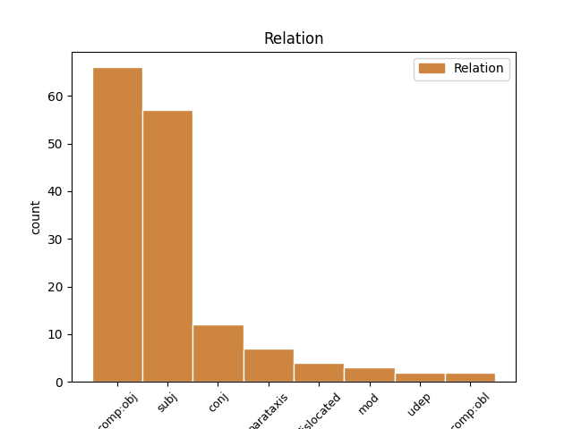
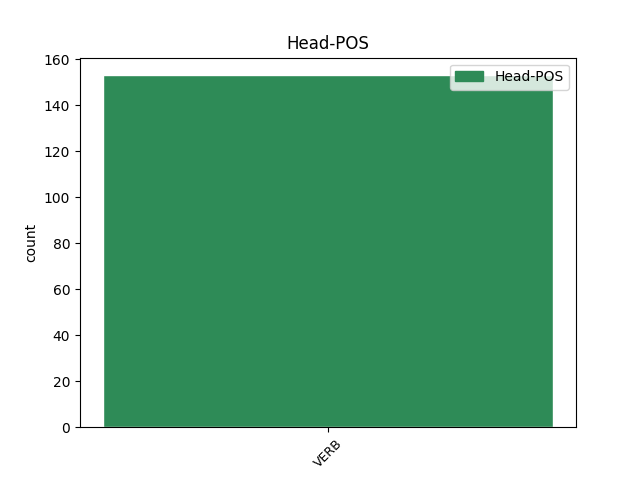
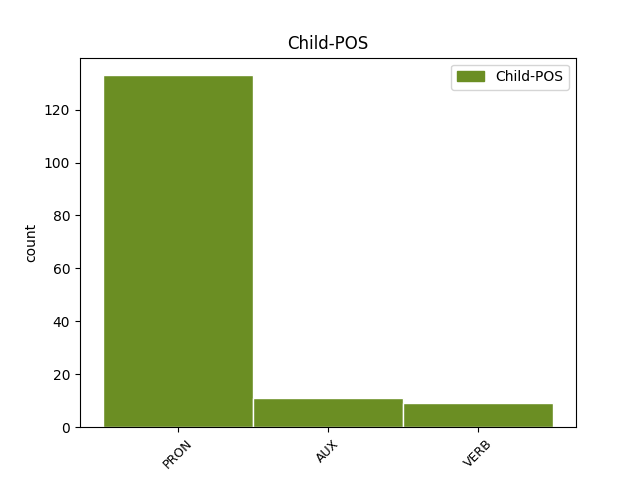

Distribution of features within this leaf



Agreement Rules sorted by frequency.
- When the dependent token is the direct object complements(comp:obj) of the head token, and the head token is VERB and the dependent token is PRON.
1 Ma _ _ _ _ 0 _ _ _
2 baamtuwaat _ _ _ _ 0 _ _ _
3 fi _ _ _ _ 0 _ _ _
4 ne _ _ _ _ 0 _ _ _
5 : _ _ _ _ 0 _ _ _
6 man _ _ _ _ 0 _ _ _
7 taaral _ _ _ _ 0 _ _ _
8 gi _ _ _ _ 0 _ _ _
9 lal _ _ _ _ 0 _ _ _
10 seen _ _ _ _ 0 _ _ _
11 am _ _ _ _ 0 _ _ _
12 mbind _ _ _ _ 0 _ _ _
13 ak _ _ _ _ 0 _ _ _
14 ni _ _ _ _ 0 _ _ _
15 mu _ _ _ _ 0 _ _ _
16 di _ _ _ _ 0 _ _ _
17 firndeele _ _ _ _ 0 _ _ _
18 ne _ _ _ _ 0 _ _ _
19 amul am VERB VERB Mood=Ind|Number=Sing|Person=3|Polarity=Neg|VerbForm=Fin 0 _ _ _
20 lu bu PRON PRON NounClass=Wol7|Number=Sing|Person=3|PronType=Rel 19 comp:obj _ _
21 làmmiñu _ _ _ _ 0 _ _ _
22 wolof _ _ _ _ 0 _ _ _
23 di _ _ _ _ 0 _ _ _
24 ñeetaane _ _ _ _ 0 _ _ _
25 weneen _ _ _ _ 0 _ _ _
26 làkk _ _ _ _ 0 _ _ _
27 mu _ _ _ _ 0 _ _ _
28 a _ _ _ _ 0 _ _ _
29 ma _ _ _ _ 0 _ _ _
30 tax _ _ _ _ 0 _ _ _
31 a _ _ _ _ 0 _ _ _
32 sukkandiku _ _ _ _ 0 _ _ _
33 ci _ _ _ _ 0 _ _ _
34 seen _ _ _ _ 0 _ _ _
35 i _ _ _ _ 0 _ _ _
36 woy _ _ _ _ 0 _ _ _
37 . _ _ _ _ 0 _ _ _
1 Kenn benn PRON PRON NounClass=Wol1|Number=Sing|PronType=Ind,Neg 2 subj _ _
2 réerewul réere VERB VERB Mood=Ind|Number=Sing|Person=3|Polarity=Neg|VerbForm=Fin 0 _ _ _
3 ne _ _ _ _ 0 _ _ _
4 njàngum _ _ _ _ 0 _ _ _
5 làmmiñi _ _ _ _ 0 _ _ _
6 réew _ _ _ _ 0 _ _ _
7 mi _ _ _ _ 0 _ _ _
8 rafle _ _ _ _ 0 _ _ _
9 na _ _ _ _ 0 _ _ _
10 lool _ _ _ _ 0 _ _ _
11 i _ _ _ _ 0 _ _ _
12 téere _ _ _ _ 0 _ _ _
13 , _ _ _ _ 0 _ _ _
14 ndaxam _ _ _ _ 0 _ _ _
15 de _ _ _ _ 0 _ _ _
16 bindkat _ _ _ _ 0 _ _ _
17 ya _ _ _ _ 0 _ _ _
18 a _ _ _ _ 0 _ _ _
19 ngi _ _ _ _ 0 _ _ _
20 di _ _ _ _ 0 _ _ _
21 góor-górlu _ _ _ _ 0 _ _ _
22 , _ _ _ _ 0 _ _ _
23 ci _ _ _ _ 0 _ _ _
24 fànna _ _ _ _ 0 _ _ _
25 bu _ _ _ _ 0 _ _ _
26 ne _ _ _ _ 0 _ _ _
27 nag _ _ _ _ 0 _ _ _
28 ( _ _ _ _ 0 _ _ _
29 njàngum _ _ _ _ 0 _ _ _
30 duruus _ _ _ _ 0 _ _ _
31 ak _ _ _ _ 0 _ _ _
32 bind _ _ _ _ 0 _ _ _
33 , _ _ _ _ 0 _ _ _
34 xayma _ _ _ _ 0 _ _ _
35 , _ _ _ _ 0 _ _ _
36 wér-gi-yaram _ _ _ _ 0 _ _ _
37 ... _ _ _ _ 0 _ _ _
38 ) _ _ _ _ 0 _ _ _
39 ; _ _ _ _ 0 _ _ _
1 Yoon _ _ _ _ 0 _ _ _
2 warul war VERB VERB Mood=Ind|Number=Sing|Person=3|Polarity=Neg|VerbForm=Fin 0 _ _ _
3 tëral _ _ _ _ 0 _ _ _
4 lu _ _ _ _ 0 _ _ _
5 dul _ _ _ _ 0 _ _ _
6 ay _ _ _ _ 0 _ _ _
7 daan _ _ _ _ 0 _ _ _
8 yu _ _ _ _ 0 _ _ _
9 nga _ _ _ _ 0 _ _ _
10 xam _ _ _ _ 0 _ _ _
11 ne _ _ _ _ 0 _ _ _
12 , _ _ _ _ 0 _ _ _
13 fés _ _ _ _ 0 _ _ _
14 na _ _ _ _ 0 _ _ _
15 ni _ _ _ _ 0 _ _ _
16 yem _ _ _ _ 0 _ _ _
17 nañu _ _ _ _ 0 _ _ _
18 kepp _ _ _ _ 0 _ _ _
19 , _ _ _ _ 0 _ _ _
20 te _ _ _ _ 0 _ _ _
21 amul am VERB VERB Mood=Ind|Number=Sing|Person=3|Polarity=Neg|VerbForm=Fin 2 conj _ _
22 kenn _ _ _ _ 0 _ _ _
23 ku _ _ _ _ 0 _ _ _
24 ñu _ _ _ _ 0 _ _ _
25 mën _ _ _ _ 0 _ _ _
26 daan _ _ _ _ 0 _ _ _
27 , _ _ _ _ 0 _ _ _
28 lu _ _ _ _ 0 _ _ _
29 dul _ _ _ _ 0 _ _ _
30 ci _ _ _ _ 0 _ _ _
31 kow _ _ _ _ 0 _ _ _
32 ab _ _ _ _ 0 _ _ _
33 àtte _ _ _ _ 0 _ _ _
34 bu _ _ _ _ 0 _ _ _
35 am _ _ _ _ 0 _ _ _
36 , _ _ _ _ 0 _ _ _
37 ñu _ _ _ _ 0 _ _ _
38 taxawal _ _ _ _ 0 _ _ _
39 ko _ _ _ _ 0 _ _ _
40 lu _ _ _ _ 0 _ _ _
41 jiitu _ _ _ _ 0 _ _ _
42 tooñeel _ _ _ _ 0 _ _ _
43 gi _ _ _ _ 0 _ _ _
44 , _ _ _ _ 0 _ _ _
45 te _ _ _ _ 0 _ _ _
46 fekk _ _ _ _ 0 _ _ _
47 ñu _ _ _ _ 0 _ _ _
48 ngi _ _ _ _ 0 _ _ _
49 ko _ _ _ _ 0 _ _ _
50 di _ _ _ _ 0 _ _ _
51 doxal _ _ _ _ 0 _ _ _
52 ni _ _ _ _ 0 _ _ _
53 mu _ _ _ _ 0 _ _ _
54 ware _ _ _ _ 0 _ _ _
55 ci _ _ _ _ 0 _ _ _
56 yoon _ _ _ _ 0 _ _ _
57 . _ _ _ _ 0 _ _ _
1 Waaye _ _ _ _ 0 _ _ _
2 bu _ _ _ _ 0 _ _ _
3 bindee _ _ _ _ 0 _ _ _
4 " _ _ _ _ 0 _ _ _
5 Waalo _ _ _ _ 0 _ _ _
6 " _ _ _ _ 0 _ _ _
7 it _ _ _ _ 0 _ _ _
8 , _ _ _ _ 0 _ _ _
9 jubluwu jublu VERB VERB Mood=Ind|Number=Sing|Person=3|Polarity=Neg|VerbForm=Fin 0 _ _ _
10 ci _ _ _ _ 0 _ _ _
11 réewum _ _ _ _ 0 _ _ _
12 Waalo _ _ _ _ 0 _ _ _
13 doŋŋ _ _ _ _ 0 _ _ _
14 , _ _ _ _ 0 _ _ _
15 àddina _ _ _ _ 0 _ _ _
16 si _ _ _ _ 0 _ _ _
17 ak _ _ _ _ 0 _ _ _
18 fu _ _ _ _ 0 _ _ _
19 nit _ _ _ _ 0 _ _ _
20 mënti _ _ _ _ 0 _ _ _
21 jóge _ _ _ _ 0 _ _ _
22 la la AUX INFL FocusType=Compl|Mood=Ind|Number=Sing|Person=3 9 parataxis _ _
23 ci _ _ _ _ 0 _ _ _
24 jublu _ _ _ _ 0 _ _ _
25 . _ _ _ _ 0 _ _ _
1 Ci _ _ _ _ 0 _ _ _
2 wirgo _ _ _ _ 0 _ _ _
3 bii _ _ _ _ 0 _ _ _
4 , _ _ _ _ 0 _ _ _
5 li _ _ _ _ 0 _ _ _
6 tax _ _ _ _ 0 _ _ _
7 natt _ _ _ _ 0 _ _ _
8 bi _ _ _ _ 0 _ _ _
9 jéggi _ _ _ _ 0 _ _ _
10 dayo _ _ _ _ 0 _ _ _
11 jógewul jóge VERB VERB Mood=Ind|Number=Sing|Person=3|Polarity=Neg|VerbForm=Fin 0 _ _ _
12 ci _ _ _ _ 0 _ _ _
13 pànkreyaa _ _ _ _ 0 _ _ _
14 bi _ _ _ _ 0 _ _ _
15 , _ _ _ _ 0 _ _ _
16 ndax _ _ _ _ 0 _ _ _
17 mën _ _ _ _ 0 _ _ _
18 na na AUX INFL Aspect=Perf|Mood=Ind|Number=Sing|Person=3 11 conj _ _
19 a _ _ _ _ 0 _ _ _
20 defar _ _ _ _ 0 _ _ _
21 « _ _ _ _ 0 _ _ _
22 insuline _ _ _ _ 0 _ _ _
23 » _ _ _ _ 0 _ _ _
24 , _ _ _ _ 0 _ _ _
25 waaye _ _ _ _ 0 _ _ _
26 yaram _ _ _ _ 0 _ _ _
27 wi _ _ _ _ 0 _ _ _
28 a _ _ _ _ 0 _ _ _
29 ko _ _ _ _ 0 _ _ _
30 mënul _ _ _ _ 0 _ _ _
31 a _ _ _ _ 0 _ _ _
32 jëfandikoo _ _ _ _ 0 _ _ _
33 ni _ _ _ _ 0 _ _ _
34 mu _ _ _ _ 0 _ _ _
35 ware _ _ _ _ 0 _ _ _
36 . _ _ _ _ 0 _ _ _
1 Lépp lépp PRON PRON NounClass=Wol7|Number=Sing|PronType=Tot 6 dislocated _ _
2 lu _ _ _ _ 0 _ _ _
3 yoon _ _ _ _ 0 _ _ _
4 terewul _ _ _ _ 0 _ _ _
5 , _ _ _ _ 0 _ _ _
6 mëneesu mën VERB VERB Mood=Ind|Number=Sing|Person=0|Polarity=Neg|VerbForm=Fin 0 _ _ _
7 ko _ _ _ _ 0 _ _ _
8 tere _ _ _ _ 0 _ _ _
9 , _ _ _ _ 0 _ _ _
10 te _ _ _ _ 0 _ _ _
11 yit _ _ _ _ 0 _ _ _
12 mëneesul _ _ _ _ 0 _ _ _
13 ga _ _ _ _ 0 _ _ _
14 kenn _ _ _ _ 0 _ _ _
15 ci _ _ _ _ 0 _ _ _
16 mu _ _ _ _ 0 _ _ _
17 def _ _ _ _ 0 _ _ _
18 lu _ _ _ _ 0 _ _ _
19 yoon _ _ _ _ 0 _ _ _
20 santaanewul _ _ _ _ 0 _ _ _
21 . _ _ _ _ 0 _ _ _
1 Li _ _ _ _ 0 _ _ _
2 mu _ _ _ _ 0 _ _ _
3 wax _ _ _ _ 0 _ _ _
4 Sërin _ _ _ _ 0 _ _ _
5 Tuubaa _ _ _ _ 0 _ _ _
6 ak _ _ _ _ 0 _ _ _
7 Alhaaji _ _ _ _ 0 _ _ _
8 Maalig _ _ _ _ 0 _ _ _
9 lu lu PRON PRON NounClass=Wol7|Number=Sing|Person=3|PronType=Int 11 mod _ _
10 tax _ _ _ _ 0 _ _ _
11 jurul jur VERB VERB Mood=Ind|Number=Sing|Person=3|Polarity=Neg|VerbForm=Fin 0 _ _ _
12 coow _ _ _ _ 0 _ _ _
13 ? _ _ _ _ 0 _ _ _
1 Amul am VERB VERB Mood=Ind|Number=Sing|Person=3|Polarity=Neg|VerbForm=Fin 0 _ _ _
2 kenn benn PRON PRON NounClass=Wol1|Number=Sing|PronType=Ind,Neg 1 udep _ _
3 ku _ _ _ _ 0 _ _ _
4 , _ _ _ _ 0 _ _ _
5 mënees _ _ _ _ 0 _ _ _
6 na _ _ _ _ 0 _ _ _
7 ko _ _ _ _ 0 _ _ _
8 jàpp _ _ _ _ 0 _ _ _
9 , _ _ _ _ 0 _ _ _
10 walla _ _ _ _ 0 _ _ _
11 téj _ _ _ _ 0 _ _ _
12 , _ _ _ _ 0 _ _ _
13 walla _ _ _ _ 0 _ _ _
14 gàddaayloo _ _ _ _ 0 _ _ _
15 , _ _ _ _ 0 _ _ _
16 ci _ _ _ _ 0 _ _ _
17 lu _ _ _ _ 0 _ _ _
18 teguwul _ _ _ _ 0 _ _ _
19 fenn _ _ _ _ 0 _ _ _
20 . _ _ _ _ 0 _ _ _
1 Lu _ _ _ _ 0 _ _ _
2 war _ _ _ _ 0 _ _ _
3 ca _ _ _ _ 0 _ _ _
4 ñoñ _ _ _ _ 0 _ _ _
5 Abuu _ _ _ _ 0 _ _ _
6 Hanifa _ _ _ _ 0 _ _ _
7 nag _ _ _ _ 0 _ _ _
8 tekkiwul tekki VERB VERB Mood=Ind|Number=Sing|Person=3|Polarity=Neg|VerbForm=Fin 0 _ _ _
9 farata _ _ _ _ 0 _ _ _
10 la la AUX COP Mood=Ind|Number=Sing|Person=3|VerbForm=Fin 8 comp:obj _ SpaceAfter=No
11 . _ _ _ _ 0 _ _ _
1 Nataalal nataal VERB VERB Mood=Imp|Number=Sing|Person=2|VerbForm=Fin 0 _ _ _
2 ma _ _ _ _ 0 _ _ _
3 beneen beneen PRON PRON NounClass=Wol5|Number=Sing|PronType=Ind 1 comp:obl _ SpaceAfter=No
4 . _ _ _ _ 0 _ _ _
1 Yombul yomb VERB VERB Mood=Ind|Number=Sing|Person=3|Polarity=Neg|VerbForm=Fin 0 _ _ _
2 nag _ _ _ _ 0 _ _ _
3 dellu _ _ _ _ 0 _ _ _
4 di _ _ _ _ 0 _ _ _
5 natalaat _ _ _ _ 0 _ _ _
6 ci _ _ _ _ 0 _ _ _
7 samay _ _ _ _ 0 _ _ _
8 at _ _ _ _ 0 _ _ _
9 , _ _ _ _ 0 _ _ _
10 rawatina _ _ _ _ 0 _ _ _
11 su _ _ _ _ 0 _ _ _
12 dee _ _ _ _ 0 _ _ _
13 masuloo mas VERB VERB Mood=Ind|Number=Sing|Person=2|Polarity=Neg|VerbForm=Fin 1 mod _ _
14 jeem _ _ _ _ 0 _ _ _
15 a _ _ _ _ 0 _ _ _
16 nataal _ _ _ _ 0 _ _ _
17 leneen _ _ _ _ 0 _ _ _
18 lu _ _ _ _ 0 _ _ _
19 weesu _ _ _ _ 0 _ _ _
20 nataalu _ _ _ _ 0 _ _ _
21 ab _ _ _ _ 0 _ _ _
22 yeew _ _ _ _ 0 _ _ _
23 bu _ _ _ _ 0 _ _ _
24 tëjju _ _ _ _ 0 _ _ _
25 ak _ _ _ _ 0 _ _ _
26 bu _ _ _ _ 0 _ _ _
27 tijjeeku _ _ _ _ 0 _ _ _
28 ca _ _ _ _ 0 _ _ _
29 say _ _ _ _ 0 _ _ _
30 juróom-benni _ _ _ _ 0 _ _ _
31 at _ _ _ _ 0 _ _ _
32 ! _ _ _ _ 0 _ _ _
1 Amul am VERB VERB Mood=Ind|Number=Sing|Person=3|Polarity=Neg|VerbForm=Fin 0 _ _ _
2 nit _ _ _ _ 0 _ _ _
3 ku _ _ _ _ 0 _ _ _
4 ñu _ _ _ _ 0 _ _ _
5 mën _ _ _ _ 0 _ _ _
6 xañ _ _ _ _ 0 _ _ _
7 askanaleem _ _ _ _ 0 _ _ _
8 , _ _ _ _ 0 _ _ _
9 naka _ _ _ _ 0 _ _ _
10 noonu _ _ _ _ 0 _ _ _
11 yit _ _ _ _ 0 _ _ _
12 mëneesu mën VERB VERB Mood=Ind|Number=Sing|Person=0|Polarity=Neg|VerbForm=Fin 1 parataxis _ _
13 ko _ _ _ _ 0 _ _ _
14 a _ _ _ _ 0 _ _ _
15 xañ _ _ _ _ 0 _ _ _
16 sañ-sañu _ _ _ _ 0 _ _ _
17 soppi _ _ _ _ 0 _ _ _
18 askanaleem _ _ _ _ 0 _ _ _
19 . _ _ _ _ 0 _ _ _
Disagree Examples:
1 Ñu _ _ _ _ 0 _ _ _
2 tegoon _ _ _ _ 0 _ _ _
3 ca _ _ _ _ 0 _ _ _
4 kaw _ _ _ _ 0 _ _ _
5 gor _ _ _ _ 0 _ _ _
6 ña _ _ _ _ 0 _ _ _
7 ay _ _ _ _ 0 _ _ _
8 njotti _ _ _ _ 0 _ _ _
9 bopp _ _ _ _ 0 _ _ _
10 yu bu PRON PRON NounClass=Wol8|Number=Plur|Person=3|PronType=Rel 12 comp:obj _ _
11 kenn _ _ _ _ 0 _ _ _
12 àttanul àttan VERB VERB Mood=Ind|Number=Sing|Person=3|Polarity=Neg|VerbForm=Fin 0 _ _ _
13 . _ _ _ _ 0 _ _ _
1 Ndànk-ndànk _ _ _ _ 0 _ _ _
2 ñu _ _ _ _ 0 _ _ _
3 di _ _ _ _ 0 _ _ _
4 toog _ _ _ _ 0 _ _ _
5 , _ _ _ _ 0 _ _ _
6 ci _ _ _ _ 0 _ _ _
7 ndoorteel _ _ _ _ 0 _ _ _
8 gi _ _ _ _ 0 _ _ _
9 , _ _ _ _ 0 _ _ _
10 ci _ _ _ _ 0 _ _ _
11 barab _ _ _ _ 0 _ _ _
12 yi bi PRON PRON Definite=Def|Deixis=Prox|NounClass=Wol8|Number=Plur|Person=3|PronType=Rel 15 comp:obj _ _
13 soose _ _ _ _ 0 _ _ _
14 yi _ _ _ _ 0 _ _ _
15 nekkul nekk VERB VERB Mood=Ind|Number=Sing|Person=3|Polarity=Neg|VerbForm=Fin 0 _ _ _
16 woon _ _ _ _ 0 _ _ _
17 . _ _ _ _ 0 _ _ _
1 Bu _ _ _ _ 0 _ _ _
2 ñu mu PRON PRON Case=Nom|Number=Plur|Person=3|PronType=Prs 4 subj _ _
3 ko _ _ _ _ 0 _ _ _
4 amul am VERB VERB Mood=Ind|Number=Sing|Person=3|Polarity=Neg|VerbForm=Fin 0 _ _ _
5 , _ _ _ _ 0 _ _ _
6 yéene _ _ _ _ 0 _ _ _
7 leen _ _ _ _ 0 _ _ _
8 ci _ _ _ _ 0 _ _ _
9 dina _ _ _ _ 0 _ _ _
10 leen _ _ _ _ 0 _ _ _
11 doy _ _ _ _ 0 _ _ _
12 am _ _ _ _ 0 _ _ _
13 Tëbëski _ _ _ _ 0 _ _ _
14 . _ _ _ _ 0 _ _ _
1 Lu _ _ _ _ 0 _ _ _
2 ñu _ _ _ _ 0 _ _ _
3 war _ _ _ _ 0 _ _ _
4 a _ _ _ _ 0 _ _ _
5 loj _ _ _ _ 0 _ _ _
6 nag _ _ _ _ 0 _ _ _
7 bu _ _ _ _ 0 _ _ _
8 ñu mu PRON PRON Case=Nom|Number=Plur|Person=3|PronType=Prs 9 subj _ _
9 amul am VERB VERB Mood=Ind|Number=Sing|Person=3|Polarity=Neg|VerbForm=Fin 0 _ _ _
10 lojukaay _ _ _ _ 0 _ _ _
11 sañees _ _ _ _ 0 _ _ _
12 na _ _ _ _ 0 _ _ _
13 ko _ _ _ _ 0 _ _ _
14 a _ _ _ _ 0 _ _ _
15 rendi _ _ _ _ 0 _ _ _
16 . _ _ _ _ 0 _ _ _
1 Lu _ _ _ _ 0 _ _ _
2 ñu _ _ _ _ 0 _ _ _
3 war _ _ _ _ 0 _ _ _
4 a _ _ _ _ 0 _ _ _
5 rendi _ _ _ _ 0 _ _ _
6 it _ _ _ _ 0 _ _ _
7 bu _ _ _ _ 0 _ _ _
8 ñu mu PRON PRON Case=Nom|Number=Plur|Person=3|PronType=Prs 9 subj _ _
9 amul am VERB VERB Mood=Ind|Number=Sing|Person=3|Polarity=Neg|VerbForm=Fin 0 _ _ _
10 rendikaay _ _ _ _ 0 _ _ _
11 te _ _ _ _ 0 _ _ _
12 am _ _ _ _ 0 _ _ _
13 lojukaay _ _ _ _ 0 _ _ _
14 sañees _ _ _ _ 0 _ _ _
15 na _ _ _ _ 0 _ _ _
16 ko _ _ _ _ 0 _ _ _
17 a _ _ _ _ 0 _ _ _
18 loj _ _ _ _ 0 _ _ _
19 . _ _ _ _ 0 _ _ _